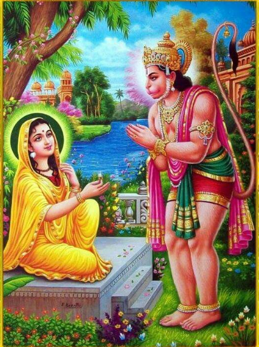

Sundarkanda Sarga 43
॥ॐ॥
मनोजवं मारुततुल्यवेगं जितेन्द्रियं बुद्धिमतां वरिष्ठम्।
वातात्मजं वानरयूथमुख्यं श्रीरामदूतं शरणं प्रपद्ये॥
Sundarakanda Sarga 43
Hanuman destroys the rakshasas in the palace
(Benefit: Winning over ones enemies)

(25 Shlokas)
ततस्स किङ्करान्हत्वा हनुमान्ध्यानमास्थितः।
वनं भग्नं मया चैत्यप्रासादो न विनाशितः॥5.43.1॥
Word-by-word meaning: ततः then, सः he, किङ्करान् the Kinkaras, हत्वा having slain, हनुमान् Hanuman, ध्यानम् meditation, आस्थितः entered (took to), वनम् forest, भग्नम् destroyed, मया by me, चैत्य-प्रासादः the lofty palatial mansion of the sanctuary (sacred to the guardian-deity of the rakshasas), न not, विनाशितः destroyed
Anvay: ततः सः हनुमान् किङ्करान् हत्वा ध्यानम् आस्थितः – मया वनं भग्नं, चैत्यप्रासादः न विनाशितः।
Simple meaning: Then, having slain the Kinkaras, Hanuman entered into contemplation. He thought—“I have destroyed the forest, but the Chaitya-prasada (the lofty palatial mansion of the sanctuary (sacred to the guardian-deity of the rakshasas) has not been destroyed.”
तस्मात्प्रासादमप्येवं भीमं विध्वंसयाम्यहं।
इति सञ्चिन्त्य मनसा हनुमान्दर्शयन्बलम्॥5.43.2॥
Word-by-word meaning: तस्मात् therefore, प्रासादम् palace, अपि also, एवम् thus, भीमम् fearful, विध्वंसयामि I shall destroy, अहम् I, इति thus, सञ्चिन्त्य having thought, मनसा in mind, हनुमान् Hanuman, दर्शयन् showing, बलम् strength
Anvay: तस्मात् अहम् एवं भीमं प्रासादम् अपि विध्वंसयामि – इति मनसा सञ्चिन्त्य हनुमान् बलं दर्शयन्…
Simple meaning: “Therefore, I shall destroy this fearful palace also,” thus having thought in his mind, Hanuman displaying his strength…
चैत्यप्रासादमाप्लुत्य मेरुशृङ्गमिवोन्नतम्।
आरुरोह कपिश्रेष्ठो हनुमान्मारुतात्मजः॥5.43.3॥
Word-by-word meaning: चैत्य-प्रासादम् temple-palace, आप्लुत्य leaping upon, मेरु-शृङ्गम् peak of Meru, इव like, उन्नतम् lofty, आरुरोह ascended, कपिश्रेष्ठः best of monkeys, हनुमान् Hanuman, मारुतात्मजः son of the Wind-God
Anvay: मारुतात्मजः कपिश्रेष्ठः हनुमान् मेरुशृङ्गम् इव उन्नतं चैत्यप्रासादम् आप्लुत्य आरुरोह।
Simple meaning: Hanuman, the son of the Wind-God and the foremost among monkeys, leapt upon the temple-palace which was lofty like the peak of Mount Meru and ascended it.
आरुह्य गिरिसङ्काशं प्रासादं हरियूथपः।
बभौ स सुमहातेजाः प्रतिसूर्य इवोदितः॥5.43.4॥
Word-by-word meaning: आरुह्य having ascended, गिरि-सङ्काशम् resembling a mountain, प्रासादम् palace, हरि-यूथपः leader of monkeys, बभौ shone, सः he, सु-महा-तेजाः of great splendour, प्रति-सूर्यः another sun, इव like, उदितः risen
Anvay: हरियूथपः सुमहातेजाः हनुमान् गिरिसङ्काशं प्रासादम् आरुह्य उदितः प्रतिसूर्यः इव बभौ।
Simple meaning: Hanuman, the illustrious leader of the monkeys, ascended the palace that resembled a mountain and shone forth like another sun.
संप्रधृष्य च दुर्धर्षं चैत्यप्रासादमुत्तमम्।
हनुमान्प्रज्वलन्लक्ष्म्या पारियात्रोपमोऽभवत्॥5.43.5॥
Word-by-word meaning: संप्रधृष्य having attacked, च and, दुर्धर्षम् unassailable, चैत्यप्रासादम् Chaitya palace, उत्तमम् excellent, हनुमान् Hanuman, प्रज्वलन् shining, लक्ष्म्या with splendour, पारियात्रः Pariyatra mountain, उपमः comparable, अभवत् became
Anvay: हनुमान् दुर्धर्षम् उत्तमं चैत्यप्रासादं संप्रधृष्य लक्ष्म्या प्रज्वलन् पारियात्रः उपमः अभवत्।
Simple meaning: Hanuman, having attacked the unassailable and lofty Chaitya palace, shone with splendour, appearing like the mighty Pariyatra mountain. (One of the seven Kula mountains viz., Mahendra, Malaya, Sahya, Shuktiman, Riksha, Vindhya and Pariyatra)
स भूत्वा सुमहाकायः प्रभावान्मारुतात्मजः।
धृष्टमास्फोटयामास लङ्कां शब्देन पूरयन्॥5.43.6॥
Word-by-word meaning: सः he, भूत्वा having become, सुमहाकायः of very great form, प्रभावात् by his power, मारुतात्मजः son of the Wind-God, धृष्टम् boldly, आस्फोटयामास made a loud sound, लङ्काम् Lanka, शब्देन with sound, पूरयन् filling
Anvay: सः मारुतात्मजः प्रभावात् सुमहाकायः भूत्वा, लङ्कां शब्देन पूरयन् धृष्टम् आस्फोटयामास।
Simple meaning: By his power, Hanuman assumed a gigantic form and boldly made a loud sound, filling Lanka with his roar.
तस्यास्फोटितशब्देन महता श्रोत्रघातिना।
पेतुर्विहङ्गमास्तत्र चैत्यपालाश्च मोहिताः॥5.43.7॥
Word-by-word meaning: तस्य his, आस्फोटित-शब्देन by the sound of the clap, महता great, श्रोत्र-घातिना striking the ears, पेतुः fell down, विहङ्गमाः birds, तत्र there, चैत्य-पालाः temple-guards, च and, मोहिताः deluded/bewildered
Anvay: तस्य महता श्रोत्रघातिना आस्फोटितशब्देन तत्र विहङ्गमाः पेतुः, चैत्यपालाः च मोहिताः।
Simple meaning: By the great, ear-piercing sound of his clap, the birds there fell down, and the temple-guards were bewildered.
अस्त्रविज्जयतां रामो लक्ष्मणश्च महाबलः।
राजा जयति सुग्रीवो राघवेणाभिपालितः॥5.43.8॥
Word-by-word meaning: अस्त्रवित् skilled-in-weapons, जयताम् be victorious, रामः Rama, लक्ष्मणः Lakshmana, च and, महाबलः mighty, राजा king, जयति is victorious, सुग्रीवः Sugriva, राघवेण by Rama, अभिपालितः protected
जयताम् - जि अभिभवे (न्यूनीभवने न्यूनीकरणे च) भ्वादिः परस्मैपदी द्विकर्मकः अनिट् (to win, to conquer, to dislike, to refrain) (जीतना, पराभव करना) कर्तरि लोट्लकारः (परस्मैपदम्) प्रथमपुरुषः द्विवचनम् (जयताम्)
जयति - जि अभिभवे (न्यूनीभवने न्यूनीकरणे च) भ्वादिः परस्मैपदी द्विकर्मकः अनिट् (to win, to conquer, to dislike, to refrain) (जीतना, पराभव करना) कर्तरि लट्लकारः (परस्मैपदम्) प्रथमपुरुषः एकवचनम् (जयति)
Anvay: अस्त्रवित् रामः, महाबलः लक्ष्मणः च जयताम्। राघवेण अभिपालितः राजा सुग्रीवः जयति।
Simple meaning: “Skilled in weapons, Rama and the mighty Lakshmana are victorious. King Sugriva, protected by Rama, also triumphs.
दासोऽहं कोसलेन्द्रस्य रामस्याक्लिष्टकर्मणः।
हनुमान्शत्रुसैन्यानां निहन्ता मारुतात्मजः॥5.43.9॥
Word-by-word meaning: दासः servant, अहम् I, कोसलेन्द्रस्य of the king of Kosala, रामस्य of Rama, अक्लिष्ट-कर्मणः of the one whose actions are unwearied, हनुमान् Hanuman, शत्रु-सैन्यानाम् of the enemy armies, निहन्ता destroyer, मारुतात्मजः son of the Wind-God
Anvay: शत्रुसैन्यानां निहन्ता मारुतात्मजः हनुमान् अहं कोसलेन्द्रस्य अक्लिष्टकर्मणः रामस्य दासः।
Simple meaning: “I am the servant of Rama, the king of Kosala, whose actions never fail. I am Hanuman, son of the Wind-God, the destroyer of enemy armies.
न रावणसहस्रं मे युद्धे प्रतिबलं भवेत्।
शिलाभिस्तु प्रहरतः पादपैश्च सहस्रशः॥5.43.10॥
Word-by-word meaning: न not, रावण-सहस्रम् the thousand Ravanas, मे to me, युद्धे in battle, प्रतिबलम् match in strength, भवेत् would be, शिलाभिः with rocks, तु indeed, प्रहरतः while I strike, पादपैः with trees/branches, च and, सहस्रशः in thousands
Anvay: सहस्रशः शिलाभिः पादपैः च प्रहरतः मे, युद्धे रावणसहस्रं प्रतिबलं न भवेत् ।
Simple meaning: “Not even a thousand Ravanas can stand my might in combat, even as I assail them with thousands of rocks and trees.
अर्दयित्वा पुरीं लङ्कामभिवाद्य च मैथिलीम्।
समृद्धार्थो गमिष्यामि मिषतां सर्वरक्षसाम्॥5.43.11॥
Word-by-word meaning: अर्दयित्वा having destroyed, पुरीम् the city, लङ्काम् Lanka, अभिवाद्य having saluted, च and, मैथिलीम् Sita, समृद्ध-अर्थः with the objective accomplished, गमिष्यामि I shall go, मिषताम् as they look on, सर्व-रक्षसाम् all the rakshasas
Anvay: सर्वरक्षसां मिषतां, पुरीं लङ्काम् अर्दयित्वा, मैथिलीम् अभिवाद्य च, समृद्धार्थः गमिष्यामि।
Simple meaning: “As the rakshasas look on, having destroyed the city of Lanka and having paid my respects to Maithili, with my purpose accomplished I shall return.
एवमुक्त्वा विमानस्थश्चैत्यस्थान्हरियूथपः।
ननाद भीमनिर्ह्रादो रक्षसां जनयन्भयम्॥5.43.12॥
Word-by-word meaning: एवम् thus, उक्त्वा having spoken, विमान-स्थः standing on the terrace, चैत्य-स्थान् the Chaitya hall, हरि-यूथपः the leader of the monkeys, ननाद roared, भीम-निर्ह्रादः with a terrible sound, रक्षसाम् of the rakshasas, जनयन् causing, भयम् fear
Anvay: हरियूथपः हनुमान् एवम् उक्त्वा चैत्यस्थान् विमानस्थः, रक्षसां भयं जनयन्, भीमनिर्ह्रादः ननाद।
Simple meaning: Having thus spoken, Hanuman, the leader of the monkeys, stood on the Chaitya hall and roared with a terrible sound, creating fear among the rakshasas.
तेन शब्देन महता चैत्यपालाश्शतं ययुः।
गृहीत्वा विविधानस्त्रान्प्रासान्खड्गान्परश्वथान्॥5.43.13॥
Word-by-word meaning: तेन by that, शब्देन sound, महता great, चैत्यपालाः guards of the Chaitya hall, शतम् a hundred, ययुः went, गृहीत्वा having taken, विविधान् various, अस्त्रान् weapons, प्रासान् javelins, खड्गान् swords, परश्वथान् battle-axes
Anvay: तेन महता शब्देन शतं चैत्यपालाः विविधान् अस्त्रान् प्रासान् खड्गान् परश्वथान् गृहीत्वा ययुः।
Simple meaning: Hearing that great sound, a hundred guards of the Chaitya hall rushed forward, taking up various weapons, javelins, swords, and battle-axes.
विसृजन्तो महाकाया मारुतिं पर्यवारयन्।
ते गदाभिर्विचित्राभिः परिघैः काञ्चनाङ्गदैः॥5.43.14॥
आजघ्नुर्वानरश्रेष्ठं बाणैश्चादित्यसन्निभैः।
Word-by-word meaning: विसृजन्तः hurling, महाकायाः of huge bodies, मारुतिम् Hanuman, पर्यवारयन् surrounded, ते they, गदाभिः with maces, विचित्राभिः varied, परिघैः with iron clubs, काञ्चन-अङ्गदैः plated with gold, अजघ्नुः struck, वानर-श्रेष्ठम् the best among monkeys (Hanuman), बाणैः with arrows, च and, आदित्य-सन्निभैः resembling the sun
Anvay: ते महाकायाः (राक्षसाः) विचित्राभिः गदाभिः काञ्चनाङ्गदैः परिघैः विसृजन्तः मारुतिं पर्यवारयन् आदित्यसन्निभैः बाणैः वानरश्रेष्ठम् अजघ्नुः।
Simple meaning: Those rakshasas of huge bodies surrounding Hanuman, hurling at him their varied maces, iron clubs, and gold plated weapons struck Hanuman, the foremost among monkeys, with arrows shining like the sun.
आवर्त इव गङ्गायास्तोयस्य विपुलो महान्॥5.43.15॥
परिक्षिप्य हरिश्रेष्ठं स बभौ रक्षसां गणः।
Word-by-word meaning: आवर्तः whirlpool, इव like, गङ्गायाः of the Ganga, तोयस्य of the waters, विपुलः vast, महान् great, परिक्षिप्य surrounding, हरि-श्रेष्ठम् the best among monkeys (Hanuman), सः that, बभौ appeared, रक्षसाम् of the rakshasas, गणः troop
Anvay: सः रक्षसां गणः हरिश्रेष्ठं परिक्षिप्य गङ्गायाः तोयस्य विपुलः महान् आवर्तः इव बभौ।
Simple meaning: That troop of rakshasas, surrounding Hanuman, the best among monkeys, looked like a vast whirlpool in the waters of the Ganga.
ततो वातात्मजः क्रुद्धो भीमरूपं समास्थितः॥5.43.16॥
Word-by-word meaning: ततः then, वात-आत्मजः son of the Wind (Hanuman), क्रुद्धः enraged, भीम-रूपम् terrible form, समास्थितः assumed
Anvay: ततः वातात्मजः क्रुद्धः भीमरूपं समास्थितः।
Simple meaning: Then Hanuman, the son of the Wind, enraged, assumed a terrible form.
प्रासादस्य महन्तस्य स्तम्बं हेमपरिष्कृतम्।
उत्पाटयित्वा वेगेन हनुमान्पवनात्मजः॥5.43.17॥
ततस्तं भ्रामयामास शतधारं महाबलः।
Word-by-word meaning: प्रासादस्य of the palace, महन्तस्य great, स्तम्बम् pillar, हेम-परिष्कृतम् adorned-with-gold, उत्पाटयित्वा having uprooted, वेगेन with great speed, हनुमान् Hanuman, पवन-आत्मजः son of the Wind, ततः then, तम् it, भ्रामयामास swung, शत-धारम् having hundred edges, महाबलः the mighty one
Anvay: ततः महाबलः पवनात्मजः हनुमान् महन्तस्य प्रासादस्य हेमपरिष्कृतं शतधारं स्तम्बम् उत्पाटयित्वा वेगेन तं भ्रामयामास।
Simple meaning: Then, the mighty Hanuman, the son of the Wind, uprooted a pillar which was adorned with gold and had a hundred edges, from the great palace with tremendous speed and swung it around.
तत्र चाग्निस्समभवत्प्रासादश्चाप्यदह्यत॥5.43.18॥
Word-by-word meaning: तत्र there, च and, अग्निः fire, समभवत् appeared, प्रासादः palace, च and, अपि also, अदह्यत was-burnt
Anvay: तत्र च अग्निः समभवत्, प्रासादः च अपि अदह्यत।
Simple meaning: There, fire broke out, and the palace also was set ablaze.
दह्यमानं ततो दृष्ट्वा प्रासादं हरियूथपः।
स राक्षसशतं हत्त्वा वज्रेणेन्द्र इवासुरान्॥5.43.19॥
अन्तरिक्षे स्थितः श्रीमानिदं वचनमब्रवीत्।
Word-by-word meaning: दह्यमानम् burning, ततः then, दृष्ट्वा seeing, प्रासादम् palace, हरियूथपः leader-of-monkeys, सः he, राक्षस-शतम् hundred-rakshasas, हत्वा having-killed, वज्रेण with-thunderbolt, इन्द्रः Indra, इव like, असुरान् demons, अन्तरिक्षे in the sky, स्थितः standing, श्रीमान् glorious, इदम् this, वचनम् words, अब्रवीत् spoke
Anvay: ततः दह्यमानं प्रासादं दृष्ट्वा श्रीमान् सः हरियूथपः – इन्द्रः वज्रेण असुरान् इव – राक्षसशतं हत्वा, अन्तरिक्षे स्थितः इदं वचनम् अब्रवीत्।
Simple meaning: Then, seeing the palace burning, the leader of the monkeys, having slain a hundred rakshasas like Indra destroying asuras with his thunderbolt, stood gloriously in the sky and spoke these words.
मादृशानां सहस्राणि विसृष्टानि महात्मनाम्॥5.43.20॥
बलिनां वानरेन्द्राणां सुग्रीववशवर्तिनाम्।
अटन्ति वसुधां कृत्स्नां वयमन्ये च वानराः॥5.43.21॥
Word-by-word meaning: मा-दृशानाम् like me, सहस्राणि thousands, विसृष्टानि sent, महात्मनाम् great, बलिनाम् mighty, वानरेन्द्राणाम् monkey-chiefs, सुग्रीव-वश-वर्तिनाम् under command of Sugriva, अटन्ति roam, वसुधाम् earth, कृत्स्नाम् entire, वयम् we, अन्ये others, च and, वानराः monkeys
Anvay: महात्मनां बलिनां वानरेन्द्राणां सुग्रीववशवर्तिनां मादृशानां सहस्राणि विसृष्टानि। वयम् अन्ये च वानराः कृत्स्नां वसुधाम् अटन्ति।
Simple meaning: “Thousands of monkeys like me, who are great and mighty leaders under the command of the great Sugriva, have been sent forth. We and many other monkeys are roaming across the entire earth.
दशनागबलाः केचित्केचिद्दशगुणोत्तराः।
केचिन्नागसहस्रस्य बभूवुस्तुल्यविक्रमाः॥5.43.22॥
Word-by-word meaning: दश-नाग-बलाः equal to strength of ten elephants, केचित् some, केचित् some, दश-गुण-उत्तराः ten times greater, केचित् some, नाग-सहस्रस्य of a thousand elephants, बभूवुः are, तुल्य-विक्रमाः equal in valour
Anvay: केचित् दशनागबलाः, केचित् दशगुणोत्तराः, केचित् नागसहस्रस्य तुल्यविक्रमाः बभूवुः।
Simple meaning: “Some monkeys have the strength of ten elephants, some possess ten times that strength, and some have valor equal to that of a thousand elephants.
सन्ति चौघबलाः केचित्केचिद्वायुबलोपमाः।
अप्रमेयबलाश्चान्ये तत्रासन्हरियूथपाः॥5.43.23॥
Word-by-word meaning: सन्ति exist, च also, ओघ-बलाः strong as floods, केचित् some, केचित् some, वायु-बल-उपमाः equal to strength of wind, अप्रमेय-बलाः immeasurable in strength, च and, अन्ये others, तत्र there, आसन् were, हरि-यूथपाः monkey-chiefs
Anvay: तत्र हरियूथपाः केचित् ओघबलाः, केचित् वायुबलोपमाः, अन्ये च अप्रमेयबलाः आसन्।
Simple meaning: “There are monkey chiefs whose strength is like a mighty flood, some equal to the power of the wind, and others whose strength is immeasurable.
ईदृग्विधैस्तु हरिभिर्वृतो दन्तनखायुधैः।
शतैश्शतसहस्रैश्च कोटीभिरयुतैरपि॥5.43.24॥
आगमिष्यति सुग्रीवः सर्वेषां वो निषूदनः।
Word-by-word meaning: ईदृक्-विधैः such-like, तु indeed, हरिभिः by monkeys, वृतः surrounded, दन्त-नख-आयुधैः having teeth and nails as weapons, शतैः by-hundreds, शत-सहस्रैः by hundred-thousands, च and, कोटीभिः by crores, अयुतैः by tens of thousands, अपि even, आगमिष्यति will come, सुग्रीवः Sugriva, सर्वेषाम् of all, वः your, निषूदनः destroyer
Anvay: तु सुग्रीवः ईदृग्विधैः दन्तनखायुधैः हरिभिः शतैः शतसहस्रैः कोटीभिः अयुतैः च वृतः, वः सर्वेषां निषूदनः आगमिष्यति।
Simple meaning: Indeed, Sugriva will come, surrounded by such monkeys—armed with teeth and nails—numbering in hundreds, hundreds of thousands, crores, and tens of thousands, and he will destroy all of you.
नेयमस्ति पुरी लङ्का न यूयं न च रावणः।
यस्मादिक्ष्वाकुनाथेन बद्धं वैरं महात्मना।5.43.25॥
Word-by-word meaning: न not, इयम् this, अस्ति exists, पुरी city, लङ्का Lanka, न not, यूयम् you, न not, च and, रावणः Ravana, यस्मात् because, इक्ष्वाकु-नाथेन by the lord of the Ikshvaku race, बद्धम् bound, वैरम् enmity, महात्मना by the great souled (Rama)
Anvay: यस्मात् महात्मना इक्ष्वाकुनाथेन बद्धं वैरं, (तस्मात्) इयं पुरी लङ्का न, यूयं न, रावणः च न अस्ति।
Simple meaning: “Because enmity has been established with the great-souled Rama, lord of the Ikshvaku dynasty, therefore this city of Lanka, you, and even Ravana himself, will no longer exist.”
इत्यार्षे श्रीमद्रामायणे वाल्मीकीये आदिकाव्ये सुन्दरकाण्डे त्रिचत्वारिंशः सर्गः॥43॥
Thus ends the forty-third sarga of Sundarakanda of the holy Ramayana, the first epic composed by sage Valmiki.
॥ जय श्री हनुमान् ॥
॥ सर्वं श्री कृष्णार्पणमस्तु ॥